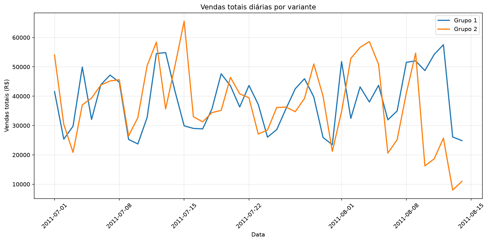
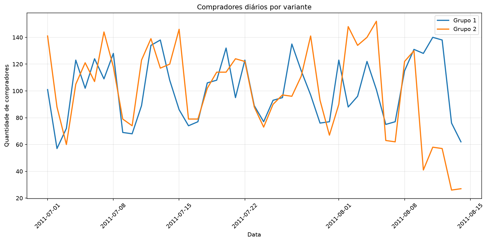
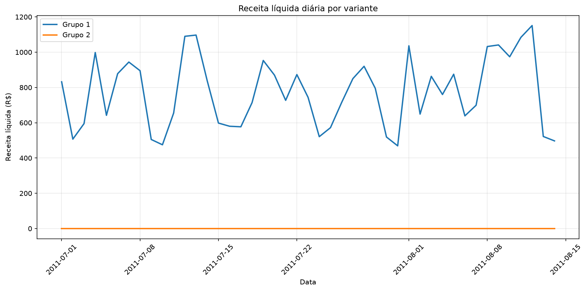
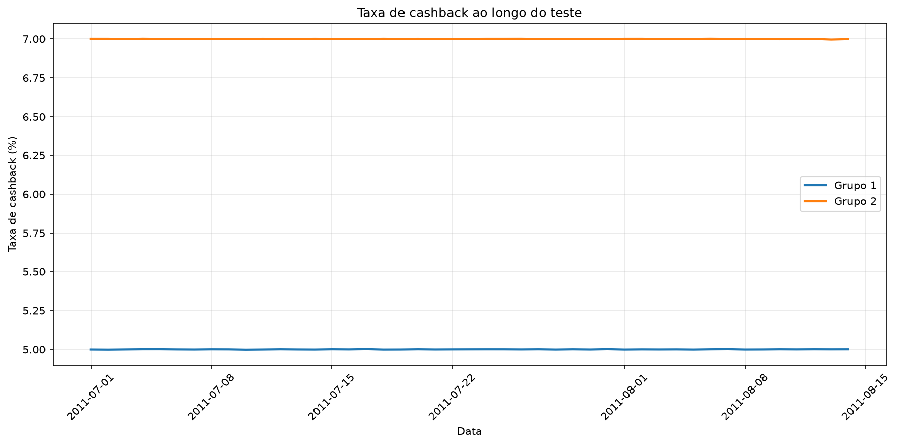
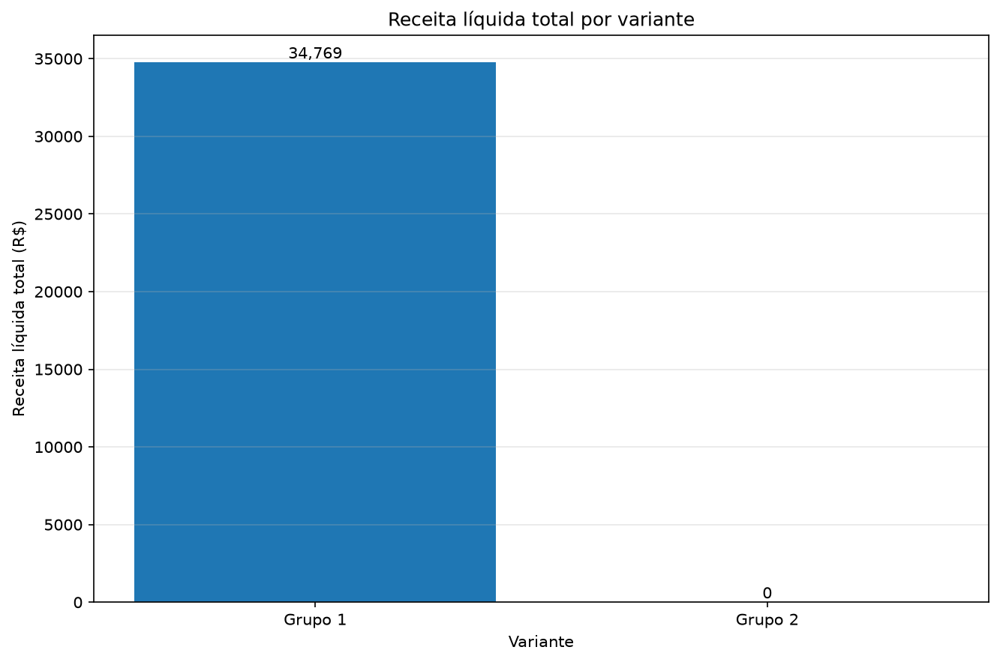

Relatório de Teste A/B de Cashback
Decisão recomendada
Decisão: ESCALAR
Grupo recomendado: Grupo 1
Confiança: ALTA
Justificativa:
Nenhuma variante apresentou aumento estatisticamente significativo de receita líquida em relação ao controle. Portanto, a recomendação é manter e escalar Grupo 1. Resultados observados: Grupo 2: receita líquida -100.00%, vendas -3.06% e compradores -0.59%.
Qualidade dos dados
- Nenhum problema relevante encontrado.
Resultados consolidados
| Variante | Dias | Compradores | Vendas totais | Cashback | Receita líquida | Ticket médio | Taxa de cashback | Margem líquida |
|---|---|---|---|---|---|---|---|---|
| Grupo 1 | 45 | 4.549 | R$ 1.738.460,00 | R$ 86.924,00 | R$ 34.769,00 | R$ 382,16 | 5.00% | 2.00% |
| Grupo 2 | 45 | 4.522 | R$ 1.685.235,00 | R$ 117.967,00 | R$ 0,00 | R$ 372,67 | 7.00% | 0.00% |
Comparações estatísticas
As variantes foram comparadas com o grupo de controle usando observações pareadas por data.
| Variante | Métrica | Lift | P-valor | IC 95% | Significativo |
|---|---|---|---|---|---|
| Grupo 2 | Compradores | -0.59% | 0.905205 | [-10.70, 9.50] | Não |
| Grupo 2 | Vendas totais | -3.06% | 0.580300 | [-5461.80, 3096.24] | Não |
| Grupo 2 | Receita líquida | -100.00% | 0.000000 | [-832.64, -712.65] | Sim |
| Grupo 2 | Ticket médio | -2.66% | 0.298302 | [-29.67, 9.31] | Não |
Visualizações
Vendas totais por dia

Compradores por dia

Receita líquida por dia

Estabilidade da taxa de cashback

Receita líquida total
